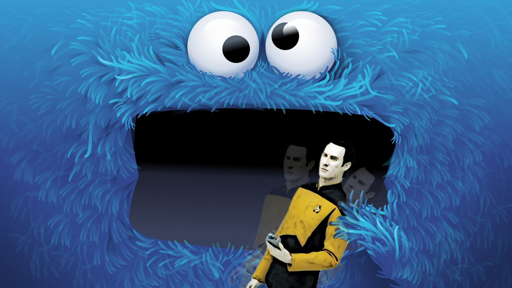
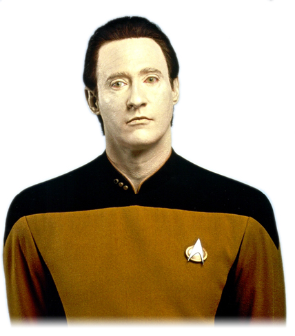

Your browser doesn't support the features required by impress.js, so you are preseqnted with a simplified version of this presentation.
For the best experience please use the latestChrome, Safari or Firefox browser.

Cookies?!
A clojure, mint nyelv
Minden érték
Debugolásnál mit nézünk?
Mi a program legfontosabb része?

Miért?
Mert adat nélkül semmik vagyunk.
(defn neighbours [[x y]]
(for [dx [-1 0 1] dy (if (zero? dx) [-1 1] [-1 0 1])]
[(+ dx x) (+ dy y)]))
(defn step [cells]
(set (for [[loc n] (frequencies (mapcat neighbours cells))
:when (or (= n 3) (and (= n 2) (cells loc)))]
loc)))Adat nélkül nincs tesztelés, nincs élet.
Tanulság?
A program transzformációk sorozata
Az adat egyszerűen követhető
Az adat szent és sérthetetlen
Miért piszkáljuk akkor mindig?!